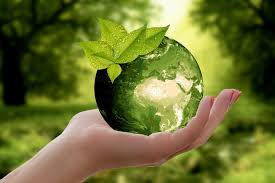

Môi trường tự nhiên bao gồm tất cả các sinh vật sống và không sống có trong tự nhiên. Môi trường tự nhiên bao gồm: môi trường nước, môi trường đất, môi trường không khí… Môi trường tự nhiên được áp dụng cho trái đất và một phần của trái đất, có ảnh hưởng trực tiếp đến sự tồn tại của con người và các hoạt động kinh tế xã hội. Khái niệm môi trường tự nhiên được chia làm 2 thành phần gồm:

Môi trường tự nhiên quanh ta
Hệ thống tự nhiên không có sự can thiệp lớn của con người văn minh gồm: Thảm thực vật, đất, đá, vi sinh vật, khí quyển, các hiện tượng tự nhiên diễn ra.
Nguồn tài nguyên thiên nhiên phổ biến và các hiện tượng vật lý, không khí, khí hậu, bức xạm điện tích nước, từ tính.
2. Môi trường tự nhiên có những vai trò như thế nào đối với con người?
Môi trường tự nhiên có những vai trò to lớn đối với cuộc sống của con người như:
Môi trường tự nhiên là gì? Đây chính là ngôi nhà chung của con người và tất cả các sinh vật trên trái đất. Sự tác động của con người đến các không gian cũng chính là sự tác động lên môi trường.
Cung cấp tài nguyên thiên nhiên cho đời sống, chúng ta khai thác các tài nguyên thiên nhiên chính là khai thác những vật chất do quá trình tài nguyên sản sinh ra. Việc con người khai thác các nguồn tài nguyên cũng có những tác động không nhỏ, đến môi trường và sự biến đổi khí hậu.
Môi trường tự nhiên chứa đựng các chất thải sinh hoạt và sản xuất công nghiệp do con người thải ra. Môi trường tự nhiên là gì? Đây là nơi được ví như thùng rác không đáy để chứa đựng tất cả các chất thải của con người.
Cung cấp cho thông tin về quá trình tiến hóa phát triển và lịch sử của loài người, các loài sinh vật sống trên trái đất. Sự đa dạng về nguồn gen của các loài động thực vật, các hệ sinh thái cung cấp những thông tin hữu ích cho các nhà khoa học.
Môi trường tự nhiên bảo vệ con người thoát khỏi những tác động bên ngoài vũ trụ như: Tia cực tím, lực hút, tác động có hại ngoài vũ trụ…
3. Con người có những tác động đến môi trường tự nhiên như thế nào?
Không chỉ gây ô nhiễm môi trường mà con người còn có những tác động tiêu cực đến môi trường tự nhiên như:
Con người khai thác sử dụng đất tự nhiên cho quá trình đô thị hóa đang diễn ra. Điều này làm giảm môi trường sống, mất nơi cư trú và nguồn thức ăn có sẵn của các loài động thực vật.
Con người đưa một số loài động thực vật không phải loài bản địa vào một hệ sinh thái. Các loài sinh vật này sẽ gây ra những ảnh hưởng tiêu cực đến các sinh vật bản địa, hoặc làm sinh vật bản địa bị tuyệt chủng.
Khai thác tài nguyên thiên nhiên ồ ạt, khai thác theo kiểu tận diệt khiến cho các nguồn tài nguyên bị cạn kiệt.
Sử dụng nhiều chất hóa học làm ô nhiễm môi trường đất, nước, không khí…
4. Hiện tượng ô nhiễm môi trường là gì?
Dưới sự tác động của con người sẽ khiến cho môi trường tự nhiên bị ô nhiễm. Khái niệm ô nhiễm môi trường sẽ được phân chia thành các loại như:
Ô nhiễm môi trường nước là sự ô nhiễm của các vùng nước sông, hồ, biển, nước ngầm, đại dương. Ô nhiễm môi trường nước chịu sự tác động của các chất thải sinh hoạt và chất thải công nghiệp của các nhà máy tác động vào nguồn nước.
Ô nhiễm môi trường đất là nguồn tài nguyên đất, có dư lượng các hóa chất độc hại vượt mức cho phép. Có nguy cơ gây hại cho sức khỏe của con người và các nguồn động thực vật, hệ sinh thái.
Ô nhiễm môi trường biển là nguồn nước biển có dư lượng các hóa chất và rác thải quá nhiều. Nguồn ô nhiễm đến từ các hóa chất và rác thải của con người được đẩy ra ngoài biển.
Ô nhiễm không khí là trong không khí có hàm lượng các khí độc cao gồm: oxit của carbon, lưu huỳnh, nitơ. Ô nhiễm không khí là mối nguy hiểm có tác động lớn đối với: sức khỏe con người và nhiều hệ sinh thái của trái đất.
5. Ô nhiễm môi trường để lại những hậu quả gì?
Tình trạng ô nhiễm môi trường tự nhiên đang diễn ra rất nặng nề, điều này sẽ tạo ra những tác động tiêu cực cho con người như:
Con người phải hứng chịu rất nhiều thiên tai như: mưa bão, lũ lụt, động đất, sóng thần…
Chất lượng cuộc sống của con người bị giảm sút trầm trọng, tuổi thọ của con người giảm. Con người dễ bị mắc các bệnh nguy hiểm như bệnh ung thư, các đại dịch lớn có sức hủy diệt hàng loạt.
Mất cân bằng sinh thái diễn ra trầm trọng, nhiều loại động thực vật bị hủy diệt hàng loạt.
Có nhiều nguồn ghen quý hiểm bị biến mất, hiện tượng đột biến ghen diễn ra nhiều hơn.
Đời sống kinh tế, xã hội của con người bị ảnh hưởng trầm trọng.
6. Bảo vệ môi trường tự nhiên là nghĩa vụ của ai?
Môi trường tự nhiên là gì? Bảo vệ môi trường tự nhiên chính là trách nhiệm của mỗi người đang sinh sống trên trái đất, là trách nhiệm chung của các cơ quan nhà nước, chính phủ các nước, tổ chức xã hội. Bảo vệ môi trường là sự nghiệp dài lâu, sự nghiệp chung của toàn dân giúp cho kinh tế xã hội phát triển bền vững.
Nhà nước có trách nhiệm bảo vệ lợi ích quốc gia dân tộc về tài nguyên thiên, môi trường tự nhiên. Nhà nước có trách nhiệm đưa ra những chính sách đầu tư, giáo dục bảo vệ môi trường tự nhiên.
Cá nhân, các tổ chức phải có trách nhiệm trong việc bảo vệ môi trường sống thông qua nhiều hành động nhỏ như: nghiêm chỉnh thực hiện luật Bảo vệ môi trường, thu dọn rác thải xung quanh môi nơi mình đang sinh sống, thực hiện phân loại rác thải trước khi vứt ra thùng rác…
7. Những hành pháp luật vi nghiêm cấm không được làm với môi trường
Trong Điều 7 của Luật Bảo vệ môi trường, có 16 hành vi bị nghiêm cấm đối với môi trường tự nhiên. Trong đó, có 7 hành vi gây hậu quả nghiêm trọng đến môi trường, nghiêm cấm con người không được làm gồm:
Khai thác, phá hoại các nguồn tài nguyên thiên nhiên trái phép bao gồm tài nguyên rừng, đất, nước, không khí, tài nguyên biển…
Không được chôn lấp chất hóa học, chất phóng xạ, chất thải công nghiệp không đúng nơi quy định, không đúng quy trình kỹ thuật về bảo vệ môi trường.
Các hoạt động sản xuất, kinh doanh sản phẩm gây nguy hại cho: con người, sinh vật và hệ sinh thái. Sản xuất, sử dụng các nguyên vật liệu xây dựng chứa yếu tố độc hại, vượt quá tiêu chuẩn được cho phép.
Hành vi khai thác, đánh bắt nguồn tài nguyên sinh vật theo phương pháp, phương tiện và công cụ mang tính hủy diệt. Khai thác không đúng thời vụ và sản lượng được theo quy định.
Xả thải các chất thải chưa được xử lý theo tiêu chuẩn môi trường, các chất phóng xạ, các chất nguy hại vào đất và nguồn nước.
Thải khói, bụi, khí có chất độc hoặc mùi độc hại vào môi trường không khí; phát tán bức xạ, phóng xạ, các chất ion hóa vượt quá so với tiêu chuẩn đã quy định.
Che giấu các hành vi hủy hoại môi trường, cản trở hoạt động bảo vệ môi trường, làm sai lệch thông tin gây hậu quả xấu đến môi trường tự nhiên.